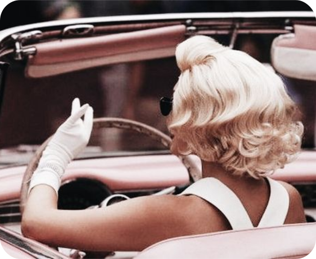
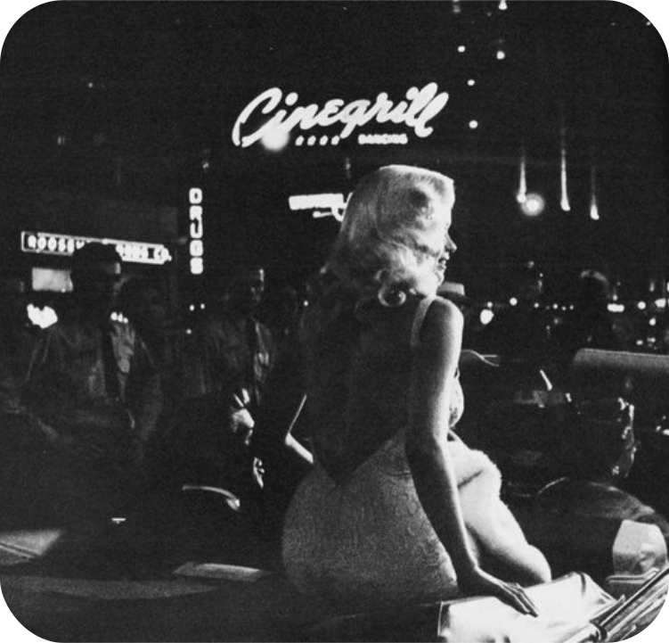

Evelyn Hugo
“Quando surge uma oportunidade para mudar sua vida, esteja pronta para fazer o que for preciso. O mundo não dá as coisas de graça para ninguém. Você as conquista.”
Sobre
Evelyn Hugo foi uma atriz consagrada de Hollywood entre as décadas de 1950 e 1960, se destacando em papéis dramáticos e românticos.
Ao longo de sua vida, Evelyn trabalhou com alguns dos diretores mais famosos da indústria cinematográfica.
Foi indicada a vários prêmios importantes, incluindo o Oscar, e conquistou muitos outros em sua carreira, uma das mais impressionantes da história de Hollywood.
Por sua trajetória lendária, Evelyn Hugo segue lembrada como uma das maiores estrelas do cinema."
Filmografia
Father and Daughter
1955
Next Door
1956
One More Day
1957
Little Women
1959


Boute-en-Train
1961
Anna Karenina
1962
Carolina Sunset
1965
Jade Diamond
1970
Three A.M.
1975
All for Us
1981
Theresa’s Wisdom
1989
Vida Pessoal
Conhecida por ser uma mulher imponente e determinada,Evelyn construiu a imagem de uma pessoa ambiciosa,que sabia exatamente o que queria, e não tinha medo de lutar por isso. E embora fosse pintada pela mídia como dura e calculista, era capaz de mostrar-se como um ser cativante.
Descrita por amigos íntimos como "Uma mulher que amou profundamente e perdeu muito em sua vida."
No geral, a personalidade de Evelyn Hugo era uma mistura complexa de força e vulnerabilidade, pretensiosidade e humanidade, um ser fascinante por completo.
